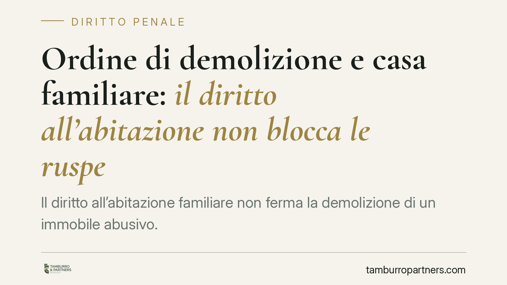

Ordine di demolizione e casa familiare: il diritto all'abitazione non blocca le ruspe
Il diritto all'abitazione familiare non ferma la demolizione di un immobile abusivo. Una recente pronuncia della Cassazione penale conferma che l'occupazione dell'immobile da parte del nucleo familiare può giustificare solo un differimento dell'esecuzione, non la sua sospensione definitiva. A prevalere resta l'interesse pubblico al ripristino della legalità urbanistica.

Il caso
Gli eredi dell'autore di un abuso edilizio chiedevano di sospendere la demolizione dell'immobile invocando la tutela della vita familiare, essendo la costruzione adibita a residenza del nucleo. La Corte di Cassazione, in una recente pronuncia in materia penale, ha respinto la richiesta di blocco, ammettendo unicamente la possibilità di una dilazione temporale utile a reperire una sistemazione alternativa.
È una conferma di un orientamento consolidato: il diritto all'abitazione non è un titolo che sana l'illegittimità urbanistica.
Inquadramento normativo
L'ordine di demolizione è disciplinato dall'art. 31 del D.P.R. 380/2001 (Testo Unico dell'Edilizia). La norma prevede due tipologie distinte, che è essenziale non confondere.
La prima è l'ordine amministrativo, adottato dal dirigente comunale nei confronti di chi ha realizzato interventi in assenza di permesso di costruire o in totale difformità.
La seconda, di diretto rilievo penale, è l'ordine disposto dal giudice penale con la sentenza di condanna per il reato edilizio previsto dall'art. 44 D.P.R. 380/2001. Su questo secondo profilo interviene l'art. 31, comma 9, secondo cui il giudice ordina la demolizione delle opere abusive contestualmente alla condanna.
Due caratteristiche distinguono questo ordine da una sanzione ordinaria. È imprescrittibile: la giurisprudenza è ferma nel ritenere che l'ordine di demolizione ex art. 31 co. 9 non si estingue per il decorso del tempo. Ed è un provvedimento di natura ripristinatoria, non punitiva: colpisce il bene, non la persona. Per questo si trasmette agli eredi dell'autore dell'abuso, che ne rispondono in quanto attuali titolari o detentori dell'immobile, pur non avendo commesso il reato.
Il bilanciamento: art. 8 CEDU e proporzionalità
Gli occupanti invocano spesso l'art. 8 della Convenzione europea dei diritti dell'uomo, che tutela il rispetto della vita privata e familiare e del domicilio. La Corte EDU, nella sentenza Ivanova e Cherkezov c. Bulgaria (2016), ha affermato che la demolizione di un'abitazione richiede un test di proporzionalità: occorre verificare in concreto se la misura sia necessaria e se non esistano alternative meno invasive.
Questo test, tuttavia, non si traduce in un diritto a mantenere l'abuso. La proporzionalità incide sulle modalità e sui tempi dell'esecuzione, non sulla sua legittimità di fondo. La questione, come sintetizzato in giurisprudenza, non è "demolire o non demolire", ma "demolire subito o demolire concedendo un tempo ragionevole".
Implicazioni pratiche
Per chi abita un immobile colpito da ordine di demolizione, il messaggio è netto: la presenza di minori, l'assenza di alternative abitative o la lunga occupazione non impediscono l'esecuzione. Possono, al più, sostenere una richiesta di differimento.
La distinzione tra differimento e blocco è decisiva. Il differimento è una dilazione a termine, motivata da esigenze concrete e temporanee. Il blocco definitivo è ammesso solo in ipotesi eccezionali, tipicamente quando sia stato avviato un procedimento di sanatoria con concrete probabilità di esito favorevole.
Per gli eredi la posizione è particolarmente delicata: possono trovarsi destinatari di un obbligo che riguarda un abuso non commesso da loro, senza poter opporre la propria estraneità al reato.
Cosa fare in concreto
- Verificare il titolo dell'ordine: distinguere se si tratta di provvedimento amministrativo del Comune o di ordine del giudice penale ex art. 31 co. 9, perché cambiano le sedi e i tempi di reazione.
- Reagire alla prima notifica: valutare senza attese l'impugnazione o l'istanza di differimento, poiché i termini sono ridotti e l'inerzia preclude molte difese.
- Istruire una eventuale sanatoria: verificare la sussistenza dei presupposti per un accertamento di conformità, unico strumento potenzialmente idoneo a paralizzare la demolizione.
- Documentare le esigenze abitative: raccogliere elementi concreti (composizione del nucleo, assenza di alternative) a sostegno di un'istanza di dilazione fondata sul principio di proporzionalità.
- Verificare la propria posizione di erede: analizzare l'estensione dell'obbligo trasmesso e le opzioni disponibili prima che l'esecuzione sia disposta.
---
Contributo informativo a cura di Tamburro & Partners - Avv. Giuseppe Tamburro. Non costituisce parere legale.
Ogni condominio ha una storia a sé.
Se gestisci un'amministrazione e vuoi un confronto su una specifica questione condominiale, scrivi allo studio. Ti rispondiamo entro un giorno lavorativo.